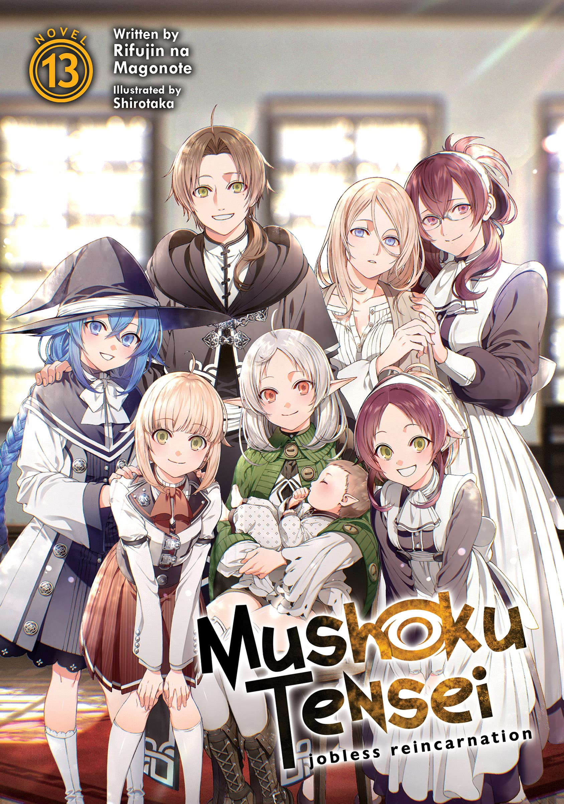
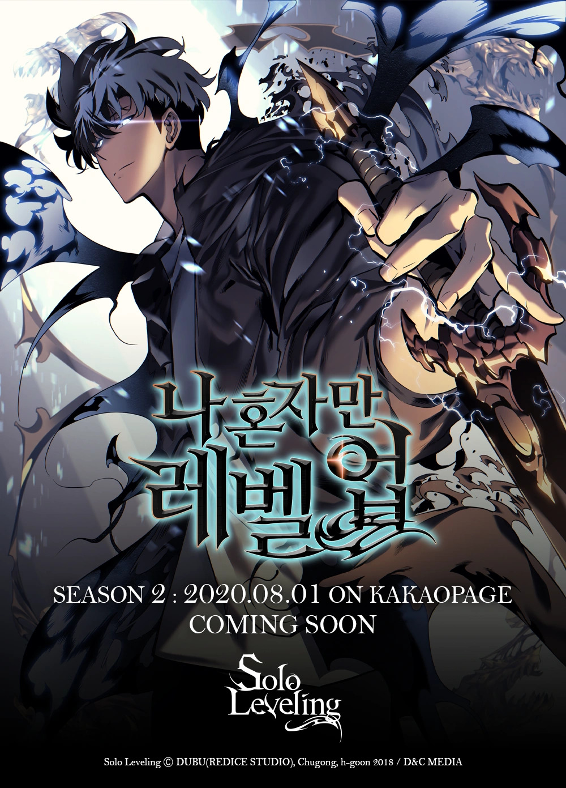
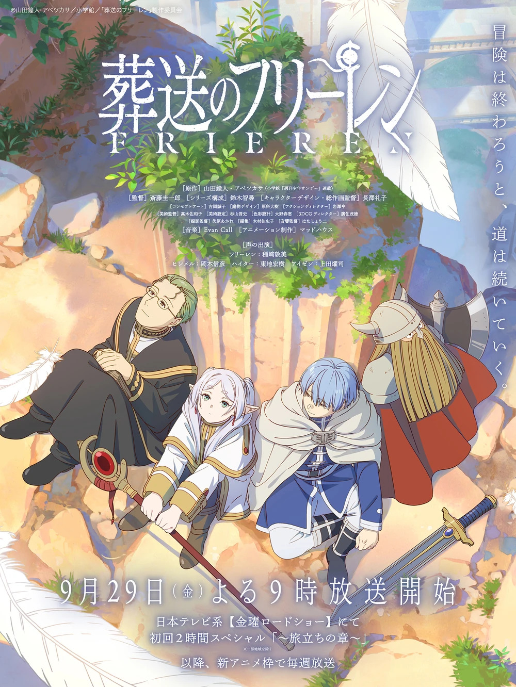
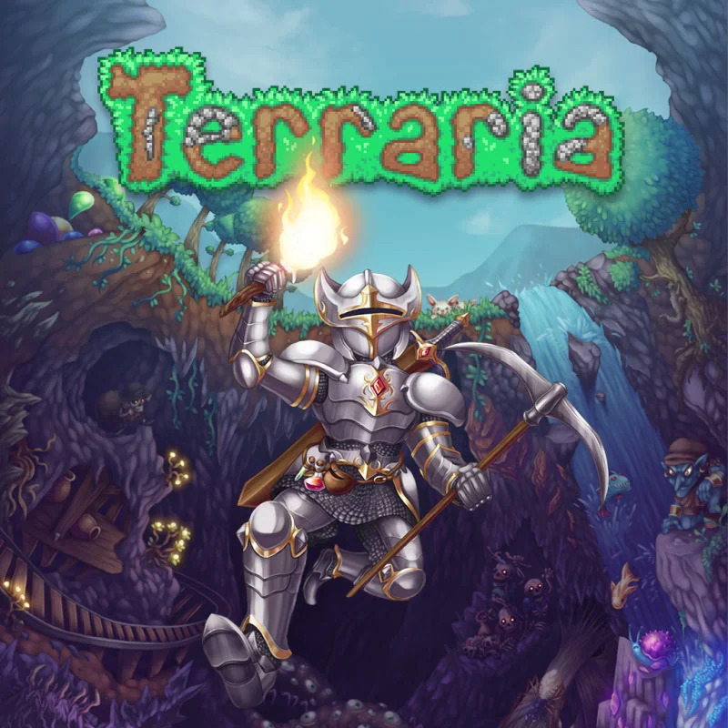

Welcome to my About page! Here, you can learn more about me personaly.
Programming Languages
HTML AND CSS
This web is developed using these.
Python
I have extensive experience in AI and Data Science, working on projects involving Machine Learning, Deep Learning, and Data Analysis.
Java
Developed a game using Java, utilizing object-oriented programming and game development frameworks.
C / C++
Used for system programming, algorithms.
Hobbies
In my free time, I enjoy indulging in my favorite pastimes like watching anime and playing Indie games I recommend the following:
Recommended Anime

Mushoku Tensei
An unnamed 34-year-old Japanese NEET is evicted from his home following his parents' death. Upon some self-introspection, he concludes that his life was ultimately pointless. Walking down a street he intercepts a speeding truck heading towards a group of teenagers, in an attempt to do something meaningful for once in his life he manages to pull one of them out of harm's way before getting himself in the way of the truck and dying. Awakening in a baby's body, he realizes he has been reincarnated in a world of sword and sorcery.

Solo Leveling
In a world where hunters, human warriors who possess magical abilities, must battle deadly monsters to protect mankind from certain annihilation, a notoriously weak hunter named Sung Jinwoo finds himself in a seemingly endless struggle for survival. One day, after narrowly surviving an overwhelmingly powerful dungeon that nearly wipes out his entire party, a mysterious program called the System chooses him as its sole player and in turn, gives him the extremely rare ability to level up in strength, possibly beyond any known limits. Follow Jinwoo's journey as he fights against all kinds of enemies, both man and monster, to discover the secrets of the dungeons and the true source of his powers.

Sousou no Frieren
The Demon King has been defeated, and the victorious hero party returns home before disbanding. The four—mage Frieren, hero Himmel, priest Heiter, and warrior Eisen—reminisce about their decade-long journey as the moment to bid each other farewell arrives. But the passing of time is different for elves, thus Frieren witnesses her companions slowly pass away one by one.
Before his death, Heiter manages to foist a young human apprentice called Fern onto Frieren. Driven by the elf's passion for collecting a myriad of magic spells, the pair embarks on a seemingly aimless journey, revisiting the places that the heroes of yore had visited. Along their travels, Frieren slowly confronts her regrets of missed opportunities to form deeper bonds with her now-deceased comrades.
Recommended Indie Games

Terraria
Terraria is a land of adventure! A land of mystery! A land that's yours to shape, defend, and enjoy. Your options in Terraria are limitless. Are you an action gamer with an itchy trigger finger? A master builder? A collector? An explorer? There's something for everyone.
Stardew Valley
You've inherited your grandfather's old farm plot in Stardew Valley.
Armed with hand-me-down tools and a few coins, you set out to begin your new life!